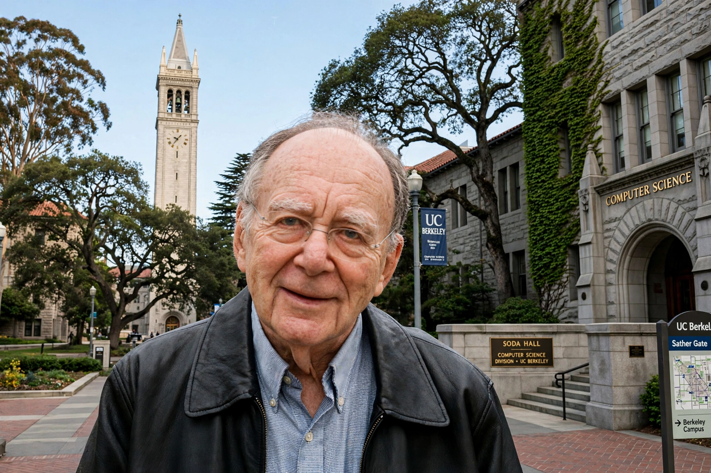

Richard Karp

Richard Manning Karp (born 3 January 1935) is an American computer scientist and computational theorist. In his 1972 paper "Reducibility among combinatorial problems", he showed that 21 diverse combinatorial problems — including the clique problem, the Hamiltonian cycle problem, and the knapsack problem — are NP-complete, building on the work of Stephen Cook and Leonid Levin on the Boolean satisfiability problem. He received the Turing Award in 1985 "for his continuing contributions to the theory of algorithms".
| Born | 3 January 1935, Boston, Massachusetts, US |
|---|---|
| Institutions | University of California, Berkeley |
| Known for | Karp's 21 NP-complete problems; Edmonds–Karp algorithm; Rabin–Karp algorithm |
| Awards | Turing Award (1985); National Medal of Science (1996) |
Biography
Karp was born in Boston and educated at Harvard University, where he received his PhD in applied mathematics in 1959. He worked at IBM's Thomas J. Watson Research Center until 1968, then joined the University of California, Berkeley, where he has spent most of his career, with a period at the University of Washington in the 1990s. He was a founding figure of the theory group at Berkeley and later of the International Computer Science Institute.
Research
Beyond the 21 NP-complete problems, Karp's name is attached to the Edmonds–Karp algorithm for maximum flow, the Rabin–Karp string-search algorithm (with Michael Rabin), and the Hopcroft–Karp algorithm for maximum matching in bipartite graphs. He made influential contributions to randomised algorithms — including work recognised by the development of approximation algorithms for NP-hard problems — and in later years turned to computational biology, applying algorithmic methods to genome sequencing and the analysis of genetic data.